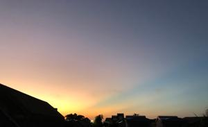

うるがいの話 ある日
最新: 枠を設けたうるがいとは 前提知識です
カニの画像をクリックすると『うるがいの話』サイトを表示します|
|
うるがい(ｳﾙｶﾞｲ urugai)とは、『もずくがに』の名前でとても大きくなります。 |
|---|---|
|
|
たながー（ﾀﾅｶﾞｰtanagaa）とは手長えびのことで、何種類かあり大きいのは車 エビぐらいになります。 |

|
ぶながー(bunagaa)とは、赤い髪の毛、赤い身体、そして身長は１ｍ２０ｃｍ ぐらい、川の蟹を食べているの目撃された。場所は沖縄県国頭郡大宜味村のと ある村僕の隣近所に住んでいる爺さんから、聞いた話です。 |
2021年09月21日 (火）枠を設けた
16:55

分かった！、昨日のプログアップ後、ネットを検索していたら答えが載ってい
た。検証作業をする、確認できた、ドーパミンが出る。今日から、枠が設けて
いる、そして友達のスマホ（スマホのスクリーンのフィルムが、少し小さいの
で、左側の余白がないと見ずらい）ために、左側に余白１２ｐｘを設け見栄え
を改善した。ところで、悩んでいた原因がスマホでは『文字サイズが勝手に大
きくなる』、それを回避するためには、任意のスタイルシートに、以下の記述
を追加する事で、「-webkit-text-size-adjust」の値を100%に指定します
これまで借りたＨＴＭＬが分かる図書館の本には、なかったス。数年悩んでい
た。プログの構造設計は、パソコンとスマホの文字フォントを考慮し、それぞ
れに合った枠を固定する事にした。パソコンは５８０ｐｘ、スマホは９３０ｐ
ｘとすることで落ちつく。
今朝の夢、仕事で合宿をしている模様、朝食をとるため下の階へ、移動しよう
とエレベータに乗ろうとするが、なぜか上手くのれず、隣の人（見覚えのある
内地の五十代以上、頭が少し剥げた人、顔はハッキリしているが誰だか思いだ
せない）が、通勤は距離がありますかと尋ねられ、え、東京だと横浜ぐらいで
すかね、と答える。近頃、仕事をしている夢をよく見る。子供じゃないけど私
も無収入、蓄えがどんどん減ってきている。アメリカンエキスレスの今月の引
き落としが、メールで通知された。１３万６千５百円、ン、なんだったけと明
細を確認すると、コドモにかけている車の保険代９万７千３百４十円が含まれ
いる。おお、そうだ、生前贈与だ。